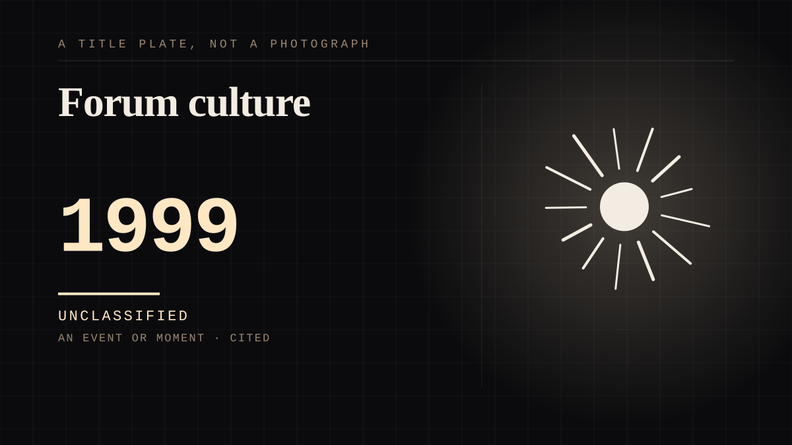

An event or moment · 1999 · Internet
Forum culture
Persistent text spaces with per-topic cultures, norms enforced by social pressure and volume.

Where the pile-on was invented. Fandom moved from letters to threads, and a thread has thousands of people in it at once with no moderator and no cost to replying.
Same story, 2 other entries
Convention culture1976 → Sasaeng culture2000
Where it sits
1950 1950-1999 · 1999 1999
Provenance · 1 source record(s)
- retrievableStan Twitter works as a functioning Community of Practice: members form interpersonal bonds, communicate regularly, and contribute. A fan forum is a real community, not a comment boxMalik, Z., & Haidar, S. (2020). Online community development through social interaction - K-Pop stan twitter as a community of practice. Interactive Learning Environments, 31(2). ↗
INSTITUTION The fandom as institution
Connected · 3 out, 4 in
The pile-ondepicts · 2008 · A mechanism or tacticFighting about a stranger in a reply sectioncites · 2005 · A mechanism or tacticFandom warscame before · 2012 · An event or momentWatching the repliescites · 2010 · A mechanism or tacticFandom warscame after · 2012 · An event or momentSecond Lifeof the same time as · 2003 · An event or momentThe forum that scored the editcame after · 2002 · A mechanism or tactic
It sits in